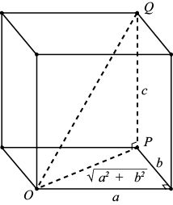
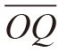
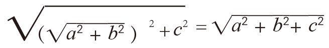
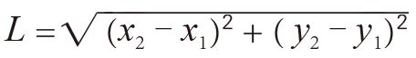
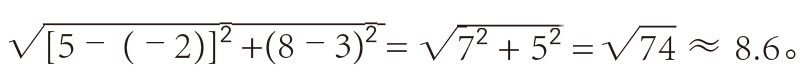
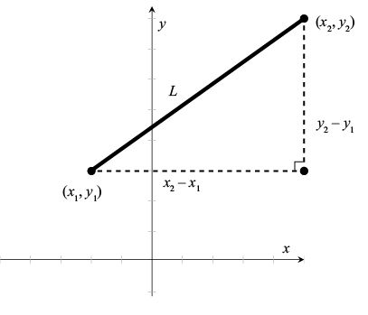
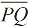
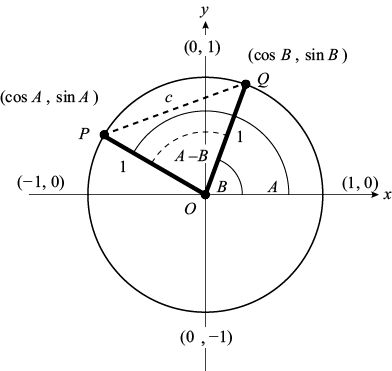
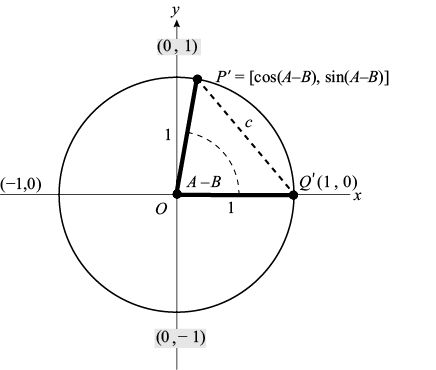
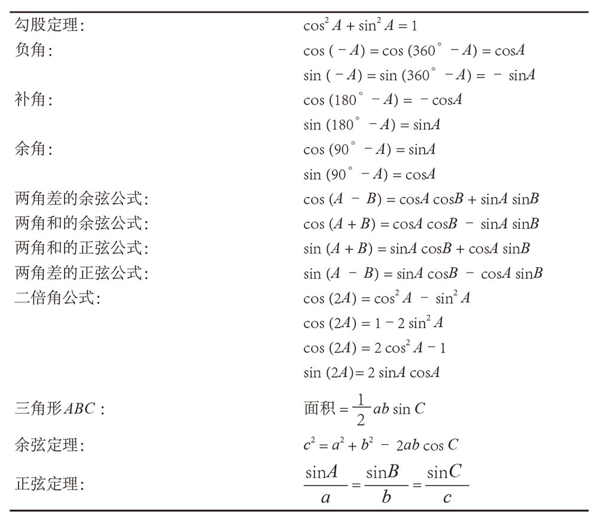

延伸阅读
如果一个盒子的大小为a×b×c，那么它的对角线有多长呢？令O、P为盒子底面对角线的两个端点。因为底面是一个a×b的矩形，因此对角线 的长度为
的长度为 。
。

从点P沿垂直方向向上运动长为c的距离，就会到达与点O相对的点Q。要求出点O与点Q的距离，就需要利用三角形OPQ。该三角形是直角三角形，直角边的长度分别为和c。因此，根据勾股定理，线段

的长度为：
三角函数之间有很多非常有意思的关系，我们称之为“三角恒等式”。前文中已经介绍了一些三角恒等式，例如：
sin (–A) = –sinA cos (–A) = cosA
还有一些有意思的恒等式可以推导出重要的公式，接下来我们将探讨这些公式。第一个恒等式来自单位圆公式：
x2 + y2 = 1
由于点 (cosA, sinA) 位于单位圆上，因此它肯定满足上述关系，也就是说 (cosA)2 + (sinA)2 = 1。这可能是最重要的三角恒等式了。
定理：对于任意角A，都有：
cos2 A + sin2 A = 1
到目前为止，我们一直在用字母A来表示任意角，但是这个字母本身没有任何特殊的地方。上述恒等式也经常用其他字母来表示，例如：
cos2 x + sin2 x = 1
此外，人们还经常使用希腊字母θ：
cos2θ + sin2θ= 1
我们有时甚至不使用任何变量，例如，我们可以把它简写成：
cos2 + sin2 = 1
在证明其他恒等式之前，我们先利用勾股定理计算一条线段的长度。它是证明这个恒等式的关键，其计算结果本身也具有非常重要的价值。
定理（距离公式）：令L为点 (x1, y1) 与 (x2, y2) 之间的线段长度，那么：

例如，点 (–2, 3) 与 (5, 8) 之间的线段长度为


证明：如上图所示，以点(x1, y1) 与 (x2, y2)之间的线段为斜边画一个直角三角形。三角形底边的长度为x2 – x1，高为y2 – y1。因此，根据勾股定理，斜边L满足：
L2 = (x2 – x1)2 + ( y2 – y1)2
也就是说，。证明完毕。 □
注意，即使x2 < x1或y2 < y1，上述公式仍然成立。例如，当x1 = 5，x2 = 1时，x1与x2之间的差是4。尽管 x2 – x1 = – 4，但它的平方同样是16，因此两者的差是正数还是负数并不重要。
如果一个盒子的大小为a×b×c，那么它的对角线有多长呢？令O、P为盒子底面对角线的两个端点。因为底面是一个a×b的矩形，因此对角线的长度为。

从点P沿垂直方向向上运动长为c的距离，就会到达与点O相对的点Q。要求出点O与点Q的距离，就需要利用三角形OPQ。该三角形是直角三角形，直角边的长度分别为和c。因此，根据勾股定理，线段

的长度为：
接下来，我们证明一个既美观又重要的三角恒等式。该定理的证明过程比较复杂，如果你不想了解，可以跳过不读。好消息是，如果这一次你不怕麻烦完成证明工作，那么后面更多恒等式的证明都将迎刃而解。
定理：对于任意角A与角B，都有：
cos (A – B) = cosA cosB + sinA sinB
证明：如下图所示，在以O为圆心的单位圆上取点P和Q，它们的坐标分别为 (cosA, sinA)、 (cosB, sinB)。那么

的长度c有什么特点呢？
通过观察可以发现，在三角形OPQ中，和都是单位圆的半径，长度为1，两者的夹角∠POQ的度数为 A –B。因此，根据余弦定理：
c2 = 12 + 12 – 2 (1) (1) cos (A –B)
= 2 – 2 cos (A –B)
与此同时，根据距离公式，c必然满足：
c2 = (x2 – x1)2 + ( y2 – y1 )2
因此，点P (cosA, sinA) 与点Q (cosB, sinB) 之间的距离c也满足：
c2 = (cosB – cosA)2 + (sinB –sinA)2
= cos2 B –2 cosA cosB + cos2 A + sin2 B –2 sinA sinB + sin2 A
= 2–2 cosA cosB –2 sinA sinB
最后一步利用了cos2B + sin2 B = 1和cos2 A + sin2 A = 1这两个恒等式。
消去两个等式中的c2，就会得到：
2 – 2 cos (A –B) = 2–2 cosA cosB –2 sinA sinB
两边同时减去2，然后同时除以–2，就会得到：
cos (A –B) = cosA cosB + sinA sinB □
上述证明建立在余弦定理的基础上，同时假设0°< A – B < 180°。但是，没有这些前提条件，我们同样可以证明cos (A–B) 公式。把上述证明过程中的三角形POQ沿顺时针方向旋转B度，所得到的三角形P'OQ'与原三角形全等，且点Q'在x轴上，其坐标为 (1, 0)。

由于∠P'OQ' = A – B，因此 P' 的坐标是 [cos (A – B ), sin (A – B)]。根据距离公式：
c2 = [cos (A – B) – 1]2 + [sin (A – B) – 0]2
= cos2 (A – B) –2 cos (A – B) + 1 + sin2 (A – B)
= 2 – 2 cos (A – B)
因此，无须运用余弦定理，也无须对角A – B做出任何假设，我们就可以断定c2 = 2 – 2 cos (A –B)。其余证明过程同上。
注意，当 A = 90°时，由于cos 90°= 0，sin 90°= 1，因此cos (A – B ) 公式会变成：
cos (90°– B) = cos 90°cosB + sin 90°sinB
= sinB
如果用90°–B 替换上式中的B，就会得到：
cosB = cos 90°cos(90°– B) + sin 90°sin (90°– B)
= sin (90°– B)
根据前文中的证明，我们知道当B是锐角时，上式成立。现在，通过上面的代数运算，我们知道对于任意角B，上式都成立。同理，如果用– B替换cos (A – B) 公式中的B，由于cos (– B) = cosB，且sin (– B) = – sinB，那么：
cos (A + B) = cosA cos (– B) + sinA sin (– B)
= cosA cosB – sinA sinB
如果令上式中的B = A，就会得到“二倍角公式”（double angle formula）：
cos (2A) = cos2 A – sin2 A
因为cos2 A = 1– sin2 A，sin2 A = 1 – cos2 A，所以我们还可以得到：
cos (2A) = 1–2 sin2 A, cos (2A) = 2 cos2 A – 1
利用这些余弦恒等式，我们可以推导出相关的正弦恒等式。例如：
sin (A + B) = cos [90°–(A + B)] = cos [(90 °–A) –B]
= cos (90°–A) cosB + sin (90 °–A) sinB
= sinA cosB + cosA sinB
令B = A，即可得到正弦二倍角公式：
sin (2A)= 2 sinA cosA
用– B替换B，就有：
sin (A–B) = sinA cosB – cosA sinB
现在，我们把本章学到的恒等式总结如下：

我必须再次提醒大家，尽管我们利用角A或角B来表示这些恒等式，但这些字母本身没有任何特别之处。使用其他任何字母，对这些恒等式都不会产生影响。例如，cos (2u) = cos2 u – sin2 u或者sin (2θ)= 2 sinθ cosθ同样成立。